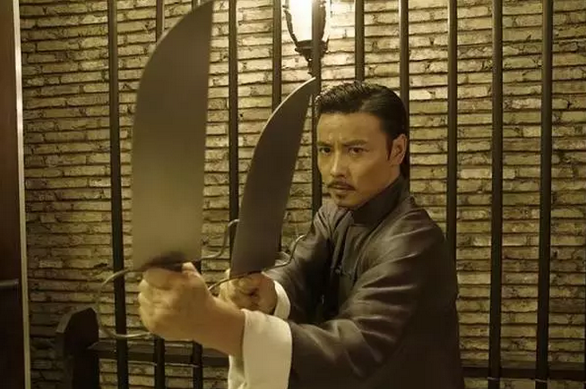
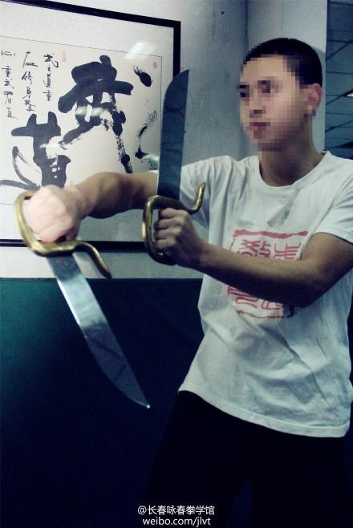

二： 八斩刀
《师父》中最抢眼的兵器就是陈识使用的八斩刀。这是并不是一种罕见的兵刃，但却是一种相对罕见的刀法，“八斩刀”不是刀的名号，而是刀法的名称，乃是咏春拳的独门刀法。
八斩刀的“双刀”采用的是南派武术常见的“蝴蝶双刀”，刀片的长大约是一个人的手臂，可藏于袖中或靴中。刀有护手，刀镡上有一个钩子，用于卸掉对方兵器所用。八斩刀是咏春拳修炼的最后一道流程，作为咏春拳的双手延长，融合了咏春中走角马、偏身、追身等技巧，弥补了刀身长度的不足。晚清时期的三元里抗英，农民用的就是这种刀，融合了咏春拳基本手法和日常短刀搏击，亦可算作八斩刀。

廖凡饰演的陈识“南拳北传”所使用的就是八斩刀，成为电影出镜率最高的兵器。片中详细的展示了八斩刀的用法，双手持刀，刀尖朝外呈“八字”，两刀间距固定、运动一致，相当于使用者拿了一件“八字”型的武器，这是最基本的架势，因此初学者学习八斩刀时大多在两刀之间栓一根绳，以保持间距。

这样做的最大好处就是以咏春技法，可以接住长兵器，双刀格挡前后一锁，再以刀镡钩两手一绞，兵器不是撩飞就是留在自己手上。因此《师父》结尾大巷战中出现了大量长兵器与八斩刀对决，后者全部取胜。

